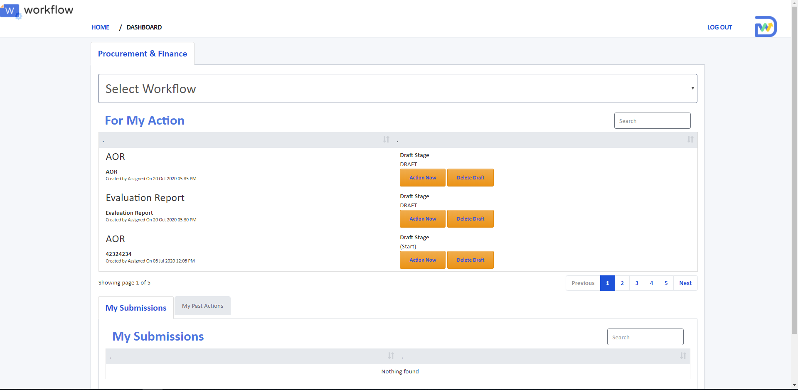

A procurement process workflow across whole government agency.

Background
The client wanted to bring in user-centric design thinking onto their product after they had build a working prototype. The product is built on a form-builder platform, which has many constrains on the interface & functionality. My role here was to access their form experiences, structure, and standardise UI component & terminology to maximise "user-friendliness" in the midst of technical constraint condition.
Goal
Asure the usability & user-friendliness of the form.
Eliminate time-consuming matter in filling out online form.
Approach
1. Understanding Functionality & Procedures
From the product that has been built, first I started by understanding the context and the intent of the product by playing around with the screen and asking questions for validation to the Product Owner.

Before redesigning
2. Understanding Users & Roles

3. Evaluation & Suggestion
Using common design principles when evaluating the screen's interaction.
- Compression of fields (remove as many fields possible)
- Autofill
- Contrast in highlighting mandatory fields to avoid encounter error
- Clear instructions
- Clear structure, grouping, and flow. To let user know where they are at.
- Structure the form, from easy to hard

3. Sponsor User Validation
To validate what have we evaluate & suggest works for the users.
1. On reducing number of fields seek a view and discussion with the related roles to make sure we only provide fields that is required to make their decision, by understanding each roles' goal.

Future State Flow